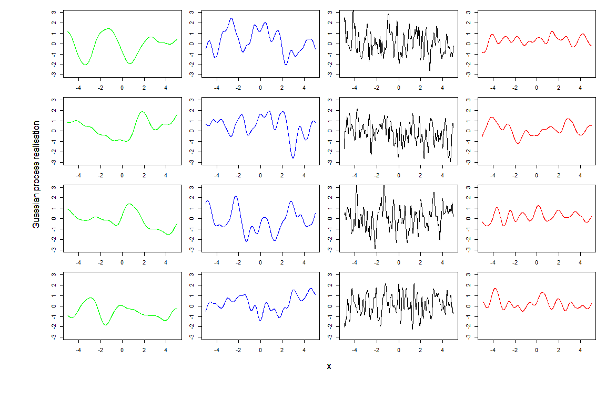

3 The structure of an emulator
The first task that the full_wave function accomplishes, is to build the emulators based on the training data. In this section we discuss the structure of the emulators that we want to construct. We then show how to build emulators step by step in the next section.
An emulator is a way of representing our beliefs about the behaviour of an unknown function. In our example we have a stochastic model and we choose the unknown function to be the mean of each of the model outputs over multiple runs. Given a training dataset, i.e. a set of model runs, we can train an emulator and use it to get expectation and variance for a model output at any parameter set, without the need to run the model at the chosen set. We think of the expectation as the prediction provided by the emulator at the chosen parameter set, and we think of the variance as the uncertainty associated to that prediction. Critically an emulator is extremely fast to evaluate (compared to the model it mimics) and hence can be used to explore the input space more fully. It is worth noting that more sophisticated approaches are possible when working with stochastic models: apart from the mean of outputs, other features, such as the variance, can be approximated through emulators. We will show how to work with these in more advanced case studies. In this tutorial, we will construct an emulator for each of the model outputs separately (more complex techniques that combine outputs are available and will be described in more advanced case studies).
The general structure of a univariate emulator is as follows: \[f(x) = g(x)^T \beta + u(x),\] where \(g(x)^T \beta\) is a regression term and \(u(x)\) is a weakly stationary process with mean zero. The role of the regression term is to mimic the global behaviour of the model output, while \(u(x)\) represents localised deviations of the output from this global behaviour near to \(x\).
3.1 The global behaviour of the output
The regression term is specified by:
a vector of deterministic functions of the parameters \(g(x)\) which determine the shape and complexity of the regression hypersurface we fit to the training data. For example, if \(x\) is one dimensional, setting \(g(x)=(1,x)\) (resp. \(g(x)=(1,x,x^2,...,x^n)\)) corresponds to fitting a straight line (resp. a degree \(n\) polynomial curve) to the training data. If \(x\) is two dimensional, say \(x=(x_1,x_2)\), then setting \(g(x)=(1,x_1,x_2)\) (resp. \(g(x)=(1,x_1, x_2,x_1^2,x_2^2,x_1x_2)\)) corresponds to fitting a hyperplane (resp. a quadratic hypersurface) to the training data;
a vector of regression coefficients \(\beta\). In the one dimensional case for example, if we set \(g(x)=(1,x)\), then \(\beta=(\beta_0,\beta_1)\), where \(\beta_0\) is the \(y\)-intercept and \(\beta_1\) is the gradient of the straight line fitted to the training data.
Common choices for \(g(x)\) are polynomials of low degree, such as degree zero, one or two. Once a choice for \(g(x)\) is made, the vector \(\beta\) can be determined as described in Appendix B. As we will see in the next section, the function emulator_from_data does this for us: it assumes a quadratic structure for the regression term and then determines the vector \(\beta\).
3.2 The local deviations from the global behaviour
In general, and especially when dealing with complex models, we cannot expect the regression hypersurface to perfectly explain the behaviour of the output. For this reason it is fundamental to account for the local deviations of the output from the regression hypersurface. Since these local deviations, also referred to as residuals, are unknown, we treat them as random variables: for each parameter \(x\), we then have a random variable \(u(x)\) representing the residual at \(x\). Furthermore, we expect the residuals \(u(x)\) and \(u(x')\) at two parameter sets \(x\) and \(x'\) that are close to each other to be correlated. In particular, the smoother is the model output (as a function of the parameters), the more correlated \(u(x)\) and \(u(x')\) will be. This collection of random variables, one for each point in the parameter space, is what is referred to as a stochastic process, and is denoted by \(\{u(x)\}_{x\in X}\), where \(X\) is the parameter space, or, a bit improperly, simply by \(u(x)\). Clearly, there exists a large variety of stochastic processes, depending on the distribution of each of the \(u(x)\) and on how each pair \((u(x),u(x'))\) interacts. In the hmer package by default we assume \(u(x)\) to be a weakly stationary process such that:
\(u(x)\) has mean zero for each parameter set \(x\). Note that the mean is assumed to be zero, since, even if we expect to see local deviations, we do not expect the output to be systematically above (or below) the regression hypersurface;
given any finite number of parameter sets \((x^1,...,x^n)\), the vector \((u(x^1),u(x^2),...,u(x^n))\) is a multivariate variable with mean \((0,...,0)\). Remember that the covariance matrix of \((u(x^1),u(x^2),...,u(x^n))\) is by definition the \(n\times n\) matrix \(\Sigma\) such that
\[\Sigma_{i,j} := \text{Cov}(u(x^i),u(x^j)).\] The higher the value of \(\Sigma_{i,j}\), the more correlated we expect the residuals at \(x_i\) and \(x_j\) to be. Similarly, the higher the value of \(\Sigma_{i,i} := \text{Cov}(u(x^i),u(x^i))= \text{Var}(u(x^i))\), the larger we expect the residual at \(x^i\) to be. In order to fully specify the process \(u(x)\), we need to know its covariance structure, i.e. \(\text{Cov}(u(x),u(x'))\) for all possible pairs of parameter sets \((x,x')\).
A very commonly used covariance structure, and the default option in the hmer package, is given by
\[\text{Cov}(u(x), u(x'))= \sigma^2 \left[(1-\delta) c(x,x^{\prime}) + \delta I_{\{x=x^\prime\}}\right]\] where \(I_{\{x=x^\prime\}}\) is \(1\) if \(x=x^\prime\) and \(0\) otherwise, while \(c\) is the square-exponential correlation function
\[c(x,x^{\prime}) := \exp \left(\frac{-||x-x'||^2}{\theta^2}\right) = \exp\left(\frac{-\sum\limits_{i}(x_{i}-x_{i}^{\prime})^2}{\theta^2}\right)\]
where \(||x-x'||\) is the euclidean distance of \(x\) and \(x'\), and \(x_i\) is the ith-component of the parameter set \(x.\) Note that \(c(x,x^{\prime})\), and therefore \(\text{Cov}(u(x), u(x'))\), only depend on the distance \(||x-x'||\) between \(x\) and \(x'\).
Let us comment on the various terms in this covariance structure:
\(\sigma^2\) is the variance of \(u(x)\): \[\text{Var}(u(x))=\text{Cov}(u(x), u(x))= \sigma^2 \left[(1-\delta) c(x,x) + \delta I_{\{x=x\}}\right]= \sigma^2 [(1-\delta)\exp(0) + \delta]=\sigma^2.\] Note that this is independent of the chosen parameter set \(x\), i.e. all variables \(u(x)\) have not only the same mean zero, but also the same variance \(\sigma^2\). The larger the value of \(\sigma\), the larger will be the variations of \(u(x)\) around its mean zero.
The so-called ‘nugget’ term \(\delta I_{\{x=x^{\prime}\}}\) ensures that the covariance matrix of \(u(x)\) is not ill-conditioned, making the computation of its inverse possible (a key operation in the training of emulators, see Appendix A). This term does not contribute to the covariance of residuals at different points, but only to the variance of each residual. In the case of a stochastic model, as in this tutorial, it can be interpreted as the proportion of the overall variance due to the ensemble variability.
\(\theta\) is the correlation length of the process. For a given pair \((x,x')\), the larger \(\theta\) is, the larger is the value of \(c(x,x')\) and therefore that of the covariance between \(u(x)\) and \(u(x')\). This means that the size of \(\theta\) determines how close two parameter sets must be in order for the corresponding residuals to be well correlated. Informally, we can think of \(\theta\) in the following way: if the distance of two parameters sets is no more than \(\theta\), then their residuals will be well correlated. In particular, a larger \(\theta\) results in a smoother (less wiggly) emulator. Note that more complex approaches are possible, for example by assuming different correlation lengths for different parameters: \(c(x,x^{\prime}) = \exp\left(-\sum\limits_{i}\frac{(x_{i}-x_{i}^{\prime})^2}{\theta_i^2}\right).\) In this more general setting, a smaller \(\theta_i\) value means that we believe that the output is less smooth with respect to parameter \(i\), and thus that the values for the corresponding parameters \(x_i\) and \(x_i^{\prime}\) must be closer in order to be well correlated.
To enhance our understanding of the role played by \(\sigma\) and \(\theta\), let us investigate how the covariance structure varies for different values of \(\sigma\) and \(\theta\), assuming \(u\) is a Gaussian process, i.e. that \(u(x)\) is normally distributed for all \(x\). For simplicity, let’s assume that we have just one parameter and that \(\delta\) is zero. Since our covariance is translation invariant, i.e. depends only on the distance between \(x\) and \(x'\), we can fix one of them, say \(x'\) to zero, and plot \[\text{Cov}(u(x), u(0))=\sigma^2 \exp \left(\frac{-|x|^2}{\theta^2}\right)\] as a function of \(x\). We plot \(\text{Cov}(u(x), u(0))\) for four different pairs \((\sigma,\theta)\):
\((\sigma,\theta)=(1,1)\) in green,
\((\sigma,\theta)=(1,0.5)\) in blue,
\((\sigma,\theta)=(1,0.1)\) in black,
\((\sigma,\theta)=(0.5,0.5)\) in red.
We can note a few things here. First of all, the value of \(\sigma\) regulates the height of the peak at zero, i.e. the value of the variance of the residuals. Second, for a fixed value of \(\sigma\), smaller values of \(\theta\) correspond to narrower curves. For example, if we look at \(x=0.5\), the green curve gives a value around \(0.8\), while the black curve gives a value around zero. This tells us that the residual at \(x=0.5\) is
very well correlated with the residual at \(x=0\) if \(\theta=1\), and
almost not correlated with the residual at \(x=0\) if \(\theta=0.1\).
This is in perfect agreement with the informal interpretation of \(\theta\) given above: “if the distance of two parameters sets is no more than \(\theta\), then their residuals will be well correlated”. In fact, when \(\theta=1\) the point \(0.5\) has distance from zero well below \(\theta\), while when \(\theta=0.1\), the point \(0.5\) has distance from zero well above \(\theta\).
For each of the four covariance structures plotted above, we can plot a few realisations of the corresponding Gaussian process \(u(x)\). By a realisation of the process \(u(x)\) we mean any function \(t\) of \(x\) where \(t(x)\) is sampled from a normal distribution with mean zero and variance \(\sigma^2\), and where values of \(t\) at different points are in accordance with the covariance structure of \(u(x)\). An easy way of producing realisations of a given process is the following:
create a sequence of points along the x-axis (since here we are still working with a 1-dimensional parameter space for simplicity)
calculate the covariance matrix for these points, using the formula \(\text{Cov}(u(x), u(x'))=\sigma^2 \exp \left(\frac{-|x-x'|^2}{\theta^2}\right)\)
use the function
rmvnormfrom themvtnormpackage to generate a sample from a multivariate normal distribution with mean vector of zeroes and covariance matrix as found in the previous step.
The code below uses the method just described and plots a realisation of the Gaussian process \(u(x)\) for \((\sigma,\theta)=(1,1)\):
x = seq(-5,5,by=0.01)
d = abs(outer(x,x,"-")) # compute distance matrix, d_{ij} = |x_i - x_j|
s = 1
l = 1
Sigma_SE = s^2 * exp(-d^2/(l^2)) # squared exponential kernel
y = mvtnorm::rmvnorm(1,sigma=Sigma_SE)
plot(x,y, type="l")Note that we set type="l" in order to plot a continuous line connecting all the values in the vector \(y\).
To compare realisations produced by different pairs \((\sigma,\theta)\), we create a \(4\times 4\) grid where each column contains four realisations from one of the four pairs \((\sigma, \theta)\). The realisations are coloured according to the colours assigned in the covariance structure plot. We set ylim=c(-3,3) in all plots, to make the comparison between columns easier.
par(mfcol=c(4,4),mar=c(1.5,1.5,1.5,1.5), oma=c(8,8,0,0))
for(i in 1:4){
x = seq(-5,5,by=0.01)
d = abs(outer(x,x,"-")) # compute distance matrix, d_{ij} = |x_i - x_j|
s = 1
l = 1
Sigma_SE = s^2 * exp(-d^2/(l^2)) # squared exponential kernel
y = mvtnorm::rmvnorm(1,sigma=Sigma_SE)
plot(x,y, type="l", col="green", ylim=c(-3,3))
mtext("Guassian process realisation", line=2, side=2, outer=T)
mtext("x", side=1, line=2, outer=T)
}
for(i in 1:4){
x = seq(-5,5,by=0.01)
d = abs(outer(x,x,"-")) # compute distance matrix, d_{ij} = |x_i - x_j|
s = 1
l = 0.5
Sigma_SE = s^2 * exp(-d^2/(l^2)) # squared exponential kernel
y = mvtnorm::rmvnorm(1,sigma=Sigma_SE)
plot(x,y, type="l", col="blue", ylim=c(-3,3))
}
for(i in 1:4){
x = seq(-5,5,by=0.01)
d = abs(outer(x,x,"-")) # compute distance matrix, d_{ij} = |x_i - x_j|
s = 1
l = 0.1
Sigma_SE = s^2 * exp(-d^2/(l^2)) # squared exponential kernel
y = mvtnorm::rmvnorm(1,sigma=Sigma_SE)
plot(x,y, type="l", ylim=c(-3,3))
}
for(i in 1:4){
x = seq(-5,5,by=0.01)
d = abs(outer(x,x,"-")) # compute distance matrix, d_{ij} = |x_i - x_j|
s = 0.5
l = 0.5
Sigma_SE = s^2 * exp(-d^2/(l^2)) # squared exponential kernel
y = mvtnorm::rmvnorm(1,sigma=Sigma_SE)
plot(x,y, type="l", col="red", ylim=c(-3,3))
}
First of all we can see that the residuals in the fourth column, generated with a smaller \(\sigma\), tend to show smaller oscillations then the other columns. If we then compare the first three columns, which correspond to the same \(\sigma\), we see that black lines are more wiggly than blue lines, which in turn are more wiggly than the green lines. This is what we expected: smaller values of \(\theta\) produce less smooth residuals. Finally it is interesting to compare the red and the blue lines: they show the same level of smoothness, since they have the same \(\theta\), but they size of the oscillations tends to be smaller in the red lines, which have a smaller \(\sigma\).
From these plots it is clear that choosing values for \(\sigma\) and \(\theta\) corresponds to making a judgment about how far we expect the output to be from the regression hypersurface (\(\sigma\)) and about its smoothness (\(\theta\)). In this tutorial we entirely rely on the hmer package, and in particular the function emulator_from_data, which selects values of \(\sigma\), \(\theta\) and \(\delta\) for us, based on the provided training data. In later tutorials, we will discuss how we can intervene to customise the choice of these hyperparameters.
We conclude this section by showing how to visualise the covariance structure when the parameter space is not one-dimensional. As before we can fix \(x'\) to be the origin for example, but now \(x\) has several coordinates. For example say that we have two parameters, so that \(x=(x_1,x_2)\) and for simplicity let us assume again that \(\delta\) is zero. Now for every pair \((x_1,x_2)\) we have a covariance value of \(\text{Cov}(u((x_1,x_2)), u(0))=\sigma^2 \exp \left(\frac{-x_1^2-x_2^2}{\theta^2}\right)\). A way of visualising such a function is through a contour plot:
\((\sigma,\theta)=(1,1)\)
\((\sigma,\theta)=(1,0.5)\)

\((\sigma,\theta)=(1,0.1)\)
\((\sigma,\theta)=(0.5,0.5)\)
We can see that the first three plots, having \(\sigma=1\), all reach the value \(1\) at the origin (the point we chose as reference), while in the last plot, where \(\sigma=0.5\), the highest values are around \(0.25\), which is in fact \(\sigma^2\). Comparing the first three plots, we see that the lower the value of \(\theta\), the darker the plot, i.e. the less correlated points are with the origin. For example, if \(\theta=1\) we see that points with a distance of a unit from the origin are still correlated with it (with a value \(0.3647-0.417\)), while if \(\theta=0.5\) points with a distance of a unit from the origin are basically uncorrelated with it (with a value \(0-0.05\)). When \(\theta=0.1\), it is enough to be at a distance of \(0.25\) from the origin to be uncorrelated with it (with a value \(0-0.05\)).
We would like to advise the reader that several emulator structures and correlation functions are available. Alternatives choices to the ones made above are discussed in Appendix B.